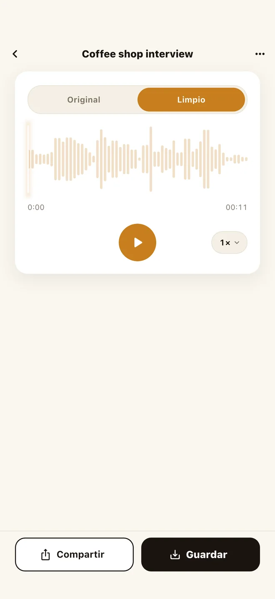

De un vistazo
Las cuatro cosas que la mayoría quiere saber primero. Todos los detalles, con su fuente, están en la tabla completa de más abajo.
| App | Sin subida | Sin cuenta | Funciona sin conexión | Guarda gratis |
|---|---|---|---|---|
| NoisyNo | ✓Sí | ✓Sí | ✓Sí | ✓Sí |
| Denoise | ✓Sí | –No se indica | –No se indica | De pago |
| Denoise.FX | ✓Sí | –No se indica | ✓Sí | –No se indica |
| Audio Cleaner | ✓Sí | –No se indica | –No se indica | –No se indica |
| PureVoice | ✓Sí | –No se indica | ✓Sí | Gratis según la ficha |
| NoiseKill | ✓Sí | ✓Sí | ✓Sí | Con anuncios |
| Offline AI Video Noise Remover | ✓Sí | ✓Sí | ✓Sí | 2 al día |
| Adobe Podcast | ✗No | ✗No | ✗No | 1 hora al día |
| LALAL.AI | ✗No | ✗No | No en teléfonos | Solo vistas previas |
✓ sí · ✗ no · – la empresa no lo indica
La tabla completa
Las mismas nueve apps, con los detalles que hay detrás de cada respuesta. Las siete primeras limpian en el teléfono; las dos últimas son servicios en la nube. Los precios son los del App Store o Google Play de EE. UU. o los de la web de cada empresa, y cuando una empresa no dice algo, la celda indica no se indica.
Desplaza la tabla hacia los lados para ver todas las columnas →
Apps para quitar ruido tal como las describen sus empresas, comprobadas el 26 de noviembre de 2026. Los números en superíndice enlazan a las fuentes.
| App | ¿Sube tu audio a un servidor? | ¿Requiere cuenta? | Modelo de precio | Plataformas | Qué es gratis / límites de exportación | ¿Funciona sin conexión? | ¿Limpia vídeo? |
|---|---|---|---|---|---|---|---|
| La limpieza se hace en el dispositivo | |||||||
| NoisyNoGrayForge (este sitio) | No. Los archivos se limpian en el dispositivo; los diagnósticos limitados no incluyen nombres de archivo ni audio.12 | No.13 | Descarga gratuita; eliminación de ruido gratis para cualquier duración. Pro: pago único, sin suscripción: $5.99 en iPhone, iPad y Android; $7.99 en Mac, que se compra aparte.23 | iPhone, iPad (iOS 15+), Mac (macOS 13.4+), Android234 | Audio limpio en M4A (AAC), gratis y de cualquier duración. WAV sin pérdida, vídeo limpio, lotes, normalización de volumen y recorte requieren Pro.12 | Sí, una vez instalada.13 | Sí. La versión gratuita guarda el audio limpio; con Pro recibes el clip como vídeo con solo el sonido sustituido.2 |
| Denoise: AI Noise RemoverRoutes Software SRL | No. La ficha dice que no se sube nada.5 | No se indica5 | Descarga gratuita. 3 exportaciones por $1.99, o Denoise Pro: $14.99 de por vida o una suscripción mensual.5 | iPhone, iPad (iOS 17+), Mac con Apple silicon5 | Limpiar y escuchar es gratis. Para guardar o compartir hace falta Pro o un paquete de exportaciones. M4A, WAV o vídeo.5 | No se indica; todo se ejecuta en el dispositivo.5 | Sí.5 |
| Denoise.FX for Audio & VideoAndrey Ivankin | No. El procesamiento se hace en el dispositivo.6 | No se indica6 | Descarga gratuita. Compras Premium: semanal ($3.99 o $4.99), “Early” ($29.99 o $39.99) y de por vida ($39.99 o $49.99).6 | iPhone (iOS 15+), Mac con Apple silicon6 | No se indica qué es gratis. Guarda el audio en el formato que elijas y los vídeos de vuelta en Fotos.6 | Sí; no necesita conexión a internet.6 | Sí.6 |
| Audio Cleaner: AI DenoiseKnotSmith Ltd. | No. La eliminación de ruido se ejecuta en local en el iPhone.7 | No se indica7 | Descarga gratuita. Premium: $3.99 a la semana, $9.99 al año o $19.99 de por vida, además de otras compras Premium de $2.99 a $7.99.7 | iPhone (iOS 18+), Mac con Apple silicon7 | No se indica qué es gratis. Exporta MP3, WAV, AAC, M4A y vídeo MP4 o MOV.7 | No se indica; el procesamiento se ejecuta en el dispositivo.7 | Sí.7 |
| Noise Reducer, PureVoiceOWLMYST | No. Las fichas dicen que el audio nunca sale del dispositivo.89 | No se indica89 | Descarga gratuita. La ficha dice que todas las funciones son gratis; el App Store también ofrece una compra Lifetime de $19.99.89 | iPhone (iOS 15.6+), Mac con Apple silicon, Android89 | Dice no tener límite de duración de procesamiento. MP3, WAV, M4A. No se indica qué desbloquea Lifetime.89 | Sí.89 | No se indica89 |
| NoiseKill: AI Noise RemoverShahLabs | No. La ficha dice que nada va a un servidor.10 | No.10 | Gratis, con anuncios. No figuran compras dentro de la app.10 | Teléfonos y tabletas Android, Chromebooks, Android TV10 | Gratis, sin marca de agua. Los archivos limpios se guardan en la galería.10 | Sí.10 | Sí; MP4, MOV, MKV.10 |
| Offline AI Video Noise RemoverAreeb Labs | No. La app no tiene permiso de acceso a internet.11 | No.11 | Gratis. Pro: compra única, sin suscripción.11 | Android11 | Gratis: 2 guardados al día a duración completa, sin marca de agua. Pro: guardados ilimitados. Vídeo MP4, audio M4A.11 | Sí.11 | Sí; la imagen se copia sin tocarla.11 |
| La limpieza se hace en la nube | |||||||
| Adobe Podcast Enhance SpeechAdobe, app web | Sí. Subes los archivos a la app web.12 | Sí; el plan gratuito empieza con un registro.12 | Plan gratuito. Plan Firefly Pro (incluye Adobe Podcast Premium): $9.99 al mes durante los 6 primeros meses, en una oferta que termina el 6 de diciembre.12 | Navegador web12 | Gratis: solo audio, un archivo cada vez, hasta 30 minutos y 500 MB, 1 hora al día. De pago: archivos de hasta 2 horas y 1 GB, 4 horas al día.12 | No; funciona en la web.12 | Solo en el plan de pago (MP4, MOV y otros)12 |
| LALAL.AI Voice Cleanerlalal.ai | Sí. Las apps para teléfono dicen que todo el procesamiento se hace en los servidores en la nube de LALAL.AI.131415 | Sí.1314 | Starter gratuito (10 minutos). Lite $90 al año, Pro $180 al año. Recargas de pago único desde $50.16 | iPhone, iPad, Android, web, escritorio131416 | El plan gratuito solo ofrece vistas previas; descargar el resultado completo requiere un plan de pago. Archivos de hasta 200 MB gratis y 2 GB de pago.1316 | No en iPhone ni en Android.1314 | Sí en la web: MP4, MOV, MKV, AVI, M4V.15 |
Las fichas de las tiendas cambian a menudo. Las etiquetas de Privacidad de la app y las secciones de Seguridad de los datos las rellenan los propios desarrolladores; Apple advierte de que sus etiquetas no están verificadas.
Cómo lo comprobamos
GrayForge desarrolla NoisyNo, así que valora esta página teniéndolo en cuenta. Todos los datos sobre las demás apps salen de su propia ficha del App Store o de Google Play de EE. UU. o de la web de la empresa, consultadas el 26 de noviembre de 2026; nada sale de webs de reseñas ni de opiniones de usuarios. No pasamos la misma grabación por todas las apps, así que la página no las ordena según lo limpio que suene el resultado. Todas las apps de esta página se pueden descargar o probar gratis, así que puedes oír la diferencia tú mismo.
NoisyNo, gratis y Pro
La eliminación de ruido es gratis para cualquier duración, sin cuenta, y el audio limpio se guarda en M4A (AAC). Pro es una compra única sin suscripción: $5.99 en iPhone, iPad y Android, y $7.99 para la versión de Mac, que se compra aparte.23



Pro añade la exportación de vídeo limpio, WAV de 16 bits sin pérdida, el procesamiento por lotes, la normalización de volumen a los objetivos de audiolibro (−18 LUFS), podcast (−16 LUFS) o vídeo y streaming (−14 LUFS), y el recorte antes de limpiar.2
Lo que la tabla no muestra
- NoisyNo quita la capa constante de ruido que hay debajo de una voz (zumbido, siseo, ventiladores, aire acondicionado, viento, ruido ambiente, tráfico) y está ajustada para la voz, no para música. De las apps de esta página que trabajan en el dispositivo, solo NoisyNo y PureVoice están a la vez en el App Store y en Google Play.12 La guía de limpieza en el dispositivo muestra todo el proceso.
- Denoise tiene el conjunto de herramientas más amplio: también reduce el eco de la sala, iguala el volumen, limpia mientras grabas, edita, acorta las pausas largas, separa la voz de la música y vende tiempo de transcripción.5
- Denoise.FX es la app para iPhone con más valoraciones de las que trabajan en el dispositivo en esta página (4.5 estrellas con 435 valoraciones en EE. UU.). Puedes ajustar el algoritmo a mano y añadir filtros de frecuencia, y su etiqueta de privacidad incluye el historial de compras y un ID de usuario como datos vinculados a ti.6
- Audio Cleaner tiene un control de intensidad con comparación de antes y después, además de ecualizador, efectos y ajustes predefinidos, y puede recibir archivos de otro equipo por wifi.7
- PureVoice dice en las dos tiendas que no recopila datos, pero ambas fichas se actualizaron por última vez en agosto de 2025.89
- NoiseKill reproduce una breve vista previa A/B antes de limpiar el archivo entero, con los niveles Gentle, Balanced y Strong (suave, equilibrado y fuerte). Es una app pequeña, con más de 100 descargas.10
- Offline AI Video Noise Remover te deja mantener presionado para oír el original mientras se reproduce y tiene un refuerzo de voz para el habla en voz baja. Es nueva: la versión actual es su primera publicación.11
- El nivel de pago de Adobe Podcast viene con el plan Firefly Pro de Adobe y añade vídeo, subida en lote y un ajuste de intensidad. Nuestra comparativa de Notas de Voz la analiza junto a Kapwing.12
- LALAL.AI Voice Cleaner también elimina la música de fondo, el retumbe del micrófono y las consonantes explosivas, y tiene un ajuste De-Echo.15
También vale la pena mirar: Auphonic, un servicio web para podcasters que reduce el ruido y la reverberación, gratis durante 2 horas al mes con una sintonía1718; Audio Noise Remover & Reducer en iPhone, gratis y con la etiqueta “Datos no recopilados”, pero solo para iOS 2619; y en Android, Noise Reducer: Clean Audio, que no declara ningún permiso20, y NoiseFix21. En el iPhone, el propio interruptor Mejorar grabación de la app Notas de Voz se analiza en nuestra página Mejorar grabación de Notas de Voz vs NoisyNo.
Cuál usar en cada caso
- Quieres un archivo limpio para guardarlo o enviarlo, gratis. NoisyNo guarda audio limpio en M4A de cualquier duración sin pagar. En Android, NoiseKill (con anuncios) y Offline AI Video Noise Remover (dos guardados al día) también son gratis.
- La voz está en un vídeo y necesitas recuperar el vídeo. NoiseKill y Offline AI Video Noise Remover guardan vídeo gratis en Android. En iPhone, Denoise guarda vídeo tras una compra, igual que NoisyNo con Pro; Denoise.FX y Audio Cleaner también guardan vídeo, pero no dicen qué es gratis.
- Quieres editar además de limpiar. Denoise graba, recorta, une, acorta pausas y transcribe; Audio Cleaner añade ecualizador y ajustes predefinidos.
- Usas un iPhone y un teléfono Android, o un Mac. NoisyNo funciona en los tres; PureVoice también está en las dos tiendas, pero no se actualiza desde agosto de 2025.
- La grabación es confidencial, como una reunión, una entrevista o una cita médica: cualquiera de las apps que trabajan en el dispositivo la mantiene fuera de los servidores de otras empresas. Tienes más en limpiar la grabación de una reunión.
- Estás en un equipo en el que no puedes instalar apps y el clip no es delicado: Adobe Podcast o LALAL.AI en el navegador. Cuenta con un registro, una subida y los límites del plan gratuito.
Comprueba tú mismo si funciona sin conexión
Las fichas las escribe quien vende la app, incluida la nuestra. Dos minutos te dirán más:
- Activa el modo Avión con el wifi desactivado y limpia una grabación corta. Si termina, el trabajo se hizo en tu teléfono.
- Una pantalla de inicio de sesión antes de procesar significa que tus archivos están vinculados a una cuenta. Lee la política de privacidad para ver qué pasa con ellos.
- Lee la sección de privacidad (Privacidad de la app en el App Store, Seguridad de los datos en Google Play), teniendo en cuenta que las dos las rellena el desarrollador.
El ruido que nunca llega a grabarse no hay que quitarlo. Aléjate de ventiladores y aparatos de aire acondicionado, acerca el teléfono a la persona que habla y, en el iPhone, prueba Aislamiento de voz mientras grabas.
Preguntas frecuentes
¿Qué apps para quitar ruido funcionan sin conexión?
NoisyNo, Denoise.FX y PureVoice en iPhone, y NoisyNo, NoiseKill, Offline AI Video Noise Remover y PureVoice en Android, dicen que limpian grabaciones sin conexión a internet. Denoise y Audio Cleaner dicen que todo se ejecuta en el dispositivo, pero no usan la palabra «sin conexión». Adobe Podcast y las apps para teléfono de LALAL.AI procesan los archivos en sus propios servidores.
¿Hay alguna app gratis para quitar ruido sin marca de agua ni límite de guardado?
NoisyNo guarda el audio limpio en M4A gratis y para cualquier duración, sin cuenta. En Android, NoiseKill es gratis con anuncios y sin marca de agua, y Offline AI Video Noise Remover guarda dos archivos al día gratis. Denoise cobra por guardar, el plan gratuito de Adobe Podcast permite 1 hora de audio al día y el plan gratuito de LALAL.AI solo ofrece vistas previas de los resultados.
¿Adobe Podcast y LALAL.AI suben mi grabación?
Sí. Adobe Podcast Enhance Speech trabaja con archivos que subes después de registrarte, y las páginas de iOS y Android de LALAL.AI dicen que todo el procesamiento se hace en sus servidores en la nube y requiere una cuenta.
¿NoisyNo es gratis?
Sí. La eliminación de ruido es gratis para cualquier duración, se guarda en M4A y no requiere cuenta. Pro es una compra única, $5.99 en iPhone, iPad y Android y $7.99 para la versión de Mac, que añade exportación de vídeo, WAV, procesamiento por lotes, normalización de volumen y recorte.
Fuentes
Todas las páginas se consultaron el 26 de noviembre de 2026. Los precios son los de EE. UU. que mostraban esas páginas ese día.
- NoisyNo product page (GrayForge) · https://grayforge.app/noisyno/Procesamiento en el dispositivo, sin cuenta, funciona sin conexión tras instalarla, formatos, funciones Pro, sin suscripción, plataformas. Comprobado el 2026-11-26.
- GrayForge llms.txt, NoisyNo section · https://grayforge.app/llms.txtQué elimina, ajustada para la voz y no para música, formatos de entrada y salida, tratamiento del vídeo con y sin Pro, funciones Pro y precios de pago único, compra aparte de Pro para Mac. Comprobado el 2026-11-26.
- NoisyNo: Voice Noise Remover, App Store (EE. UU.) · https://apps.apple.com/us/app/id6772728543Compras dentro de la app (NoisyNo Pro $5.99, y $7.99 para la versión de Mac), requisitos de iOS 15, iPadOS 15 y macOS 13.4, sin subidas y sin cuentas. Comprobado el 2026-11-26.
- NoisyNo: Voice Noise Remover, Google Play (EE. UU.) · https://play.google.com/store/apps/details?id=com.grayforge.noisynoFicha de Android, modelo en el dispositivo, sin nube y sin cuentas. Comprobado el 2026-11-26.
- Denoise: AI Noise Remover, App Store (EE. UU.) · https://apps.apple.com/us/app/id946423200No se sube nada, se ejecuta en el dispositivo, limpieza y escucha gratis, Pro o paquete de exportaciones para guardar, precios de las compras dentro de la app, exportación en M4A/WAV/vídeo, funciones de edición y transcripción, compatibilidad. Comprobado el 2026-11-26.
- Denoise.FX for Audio & Video, App Store (EE. UU.) · https://apps.apple.com/us/app/id1623119654Procesamiento en el dispositivo sin necesidad de conexión a internet, precios de las compras dentro de la app, compatibilidad con vídeo, modos de la versión 3.0, compatibilidad, valoraciones, etiqueta de Privacidad de la app. Comprobado el 2026-11-26.
- Audio Cleaner: AI Denoise, App Store (EE. UU.) · https://apps.apple.com/us/app/id6751505212La eliminación de ruido se ejecuta en local, precios de las compras dentro de la app, formatos de exportación, compatibilidad con vídeo, ecualizador y ajustes predefinidos, requisito de iOS 18. Comprobado el 2026-11-26.
- Noise Reducer, PureVoice, App Store (EE. UU.) · https://apps.apple.com/us/app/id6748527663Sin conexión, sin subidas, Lifetime $19.99, la frase “todas las funciones gratis”, MP3/WAV/M4A, compatibilidad, etiqueta “Datos no recopilados”, última actualización en agosto de 2025. Comprobado el 2026-11-26.
- Noise Reducer, PureVoice, Google Play (EE. UU.) · https://play.google.com/store/apps/details?id=com.owlmyst.ai.purvoiceSin conexión, sin subidas, compras dentro de la app, no recopila datos, actualizada el 27 de agosto de 2025. Comprobado el 2026-11-26.
- NoiseKill: AI Noise Remover, Google Play (EE. UU.) · https://play.google.com/store/apps/details?id=com.mcore.noisekillEn el dispositivo, sin necesidad de internet, sin cuenta, sin marca de agua, contiene anuncios, formatos de vídeo y audio, dispositivos compatibles, sección de Seguridad de los datos. Comprobado el 2026-11-26.
- Offline AI Video Noise Remover, Google Play (EE. UU.) · https://play.google.com/store/apps/details?id=com.areeblabs.noiseremoverSin permiso de internet, sin registro, gratis (2 guardados al día) y Pro de pago único, salida en MP4 y M4A, primera publicación. Comprobado el 2026-11-26.
- Adobe Podcast plans · https://podcast.adobe.com/en/plansLímites del plan gratuito de Enhance Speech y del plan Firefly Pro, registro, subida de un archivo cada vez, vídeo en el plan de pago, oferta de $9.99 al mes durante los 6 primeros meses que termina el 6 de diciembre. Comprobado el 2026-11-26.
- LALAL.AI for iOS · https://www.lalal.ai/ios-app/El procesamiento se hace en los servidores en la nube de LALAL.AI, requiere internet y cuenta, el plan gratuito solo ofrece vistas previas, iPhone y iPad. Comprobado el 2026-11-26.
- LALAL.AI for Android · https://www.lalal.ai/android-app/El procesamiento se hace en los servidores en la nube de LALAL.AI, requiere internet y cuenta, eliminación de ruido y de música de fondo. Comprobado el 2026-11-26.
- LALAL.AI Voice Cleaner · https://www.lalal.ai/voice-cleaner/Servicio online, requiere subir el archivo, qué elimina, ajuste De-Echo, formatos de vídeo. Comprobado el 2026-11-26.
- LALAL.AI pricing · https://www.lalal.ai/pricing/Planes Starter, Lite y Pro, límites de tamaño de subida, recargas de pago único. Comprobado el 2026-11-26.
- Auphonic pricing · https://auphonic.com/pricing2 horas gratis al mes con una sintonía, créditos recurrentes desde $11 al mes con facturación anual, créditos de pago único desde $12 por 5 horas, reducción de ruido y reverberación en todos los planes. Comprobado el 2026-11-26.
- Auphonic help, Production · https://auphonic.com/help/web/production.htmlSubida en el navegador, por enlace o desde servicios externos; los archivos de audio se guardan solo durante un número limitado de días; ajustes de eliminación de ruido y reverberación. Comprobado el 2026-11-26.
- Audio Noise Remover & Reducer, App Store (EE. UU.) · https://apps.apple.com/us/app/id6782887119Gratis, sin cuenta, sin acceso a la red, vídeo y audio, etiqueta “Datos no recopilados”, requisito de iOS 26. Comprobado el 2026-11-26.
- Noise Reducer: Clean Audio, Google Play (EE. UU.) · https://play.google.com/store/apps/details?id=noise.reducerModelo incluido, sin cuenta, sin permisos, sin anuncios, salida en WAV, solo ruido constante, sin lotes. Comprobado el 2026-11-26.
- NoiseFix: offline AI Denoiser, Google Play (EE. UU.) · https://play.google.com/store/apps/details?id=io.cyberfly.noisefixSin conexión, sin cuenta, opción de compra única, pensada para la voz y no para música, no recopila datos. Comprobado el 2026-11-26.
NoisyNo — Voice Noise Remover
Elimina el zumbido, el siseo, el ruido del ventilador, el viento y el ruido ambiente de grabaciones de voz y del audio de vídeos, en tu dispositivo. Sin subir nada, sin cuenta y con eliminación de ruido gratis para cualquier duración.
Avísanos y corregiremos la tabla.
Las fichas cambian. Si un precio, una plataforma o un límite de esta página está desactualizado, también los de NoisyNo, envía una nota con el enlace y corregiremos la tabla.
grayforge.dev@gmail.com